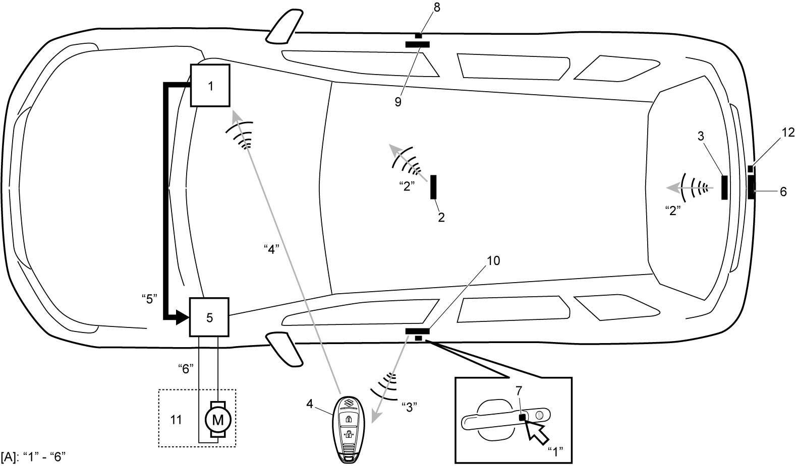
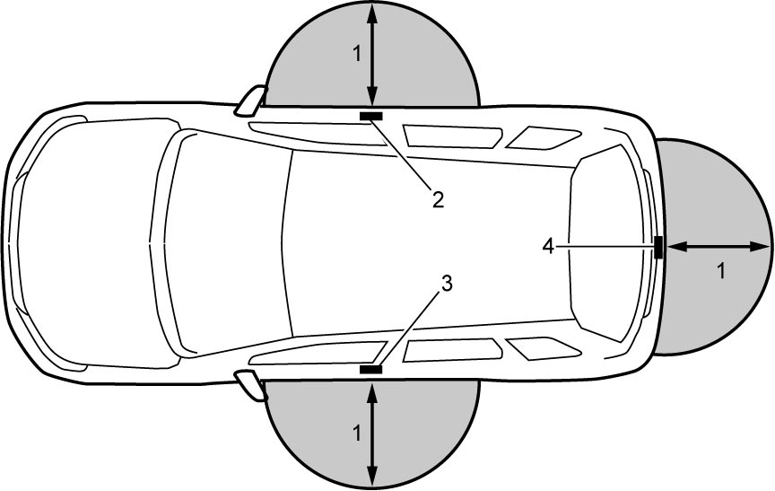
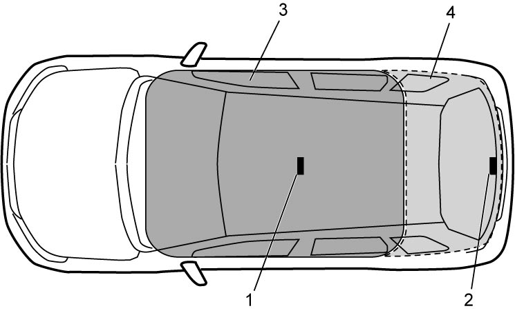

10E
| Description of Keyless Start System Door Lock Function |
Door lock function consists of 3 types of lock / unlock methods: using request switch, using keyless entry system, and using key cylinder operation.
Lock / Unlock Using Door Request Switch
Lock / unlock the doors using door request switch as shown below.
1)Push door request switch incorporated in the outside handle of driver or passenger door or the rear end door.
2)Keyless start control module (1) activates mid inside antenna (2) and rear inside antenna (3) to transmit request signal within the vehicle compartment and luggage compartment.
3)When keyless start control module determines that remote controller (4) is not in vehicle compartment and luggage compartment, it activates the outside antenna of door at which door request switch was pushed and sends request signal to remote controller.
4)The remote controller that receives request signal sends ID code to keyless start control module.
5)Keyless start control module compares ID code sent from remote controller with ID code registered in keyless start control module. If ID codes match, keyless start control module outputs door lock / unlock request signal (depending on door lock switch state) to BCM (5) through CAN communication.
6)BCM activates door lock actuator.


 "Expand image")
| [A]: | Signal flow “1” – “6” linked with Step 1) – 6) | 8. | Passenger door request switch | 11. | Each door lock actuator |
| 6. | Rear outside antenna | 9. | Passenger side outside antenna | 12. | Rear end door request switch |
| 7. | Driver door request switch | 10. | Driver side outside antenna |
Operation area
Distance between remote controller and each door antenna should be within approximately 80 cm (31.5 in, 2.6 ft) (1), to ensure operation of door lock function. Also, locking and unlocking are possible only when remote controller is within operation area where request switch has been pushed. (For example: When driver door request switch has been pushed, remote controller should be within operation area of driver outside antenna.)
NOTE:
•Door lock function may not operate if remote controller is placed too close to vehicle, near to the ground, or too high up.
•Door lock function may not operate if the same type of vehicles equipped with keyless start system are placed next to each other, and both keyless start systems operate at the same time.
•Door lock function may not operate if registered remote controller are carried at the same time.
•Door lock function may not operate if the same type of vehicles equipped with keyless start system are placed next to each other, and both keyless start systems operate at the same time.
•Door lock function may not operate if registered remote controller are carried at the same time.

 "Expand image")
| 2. | Passenger side outside antenna | 4. | Rear outside antenna |
| 3. | Driver side outside antenna |
Safety function
Doors cannot be locked with door request switch when any of the following conditions is present.
•Ignition is “ACC” or “ON”.
•One of the doors is open.
•Keyless start control module determines that remote controller is in vehicle compartment.
•One of the doors is open.
•Keyless start control module determines that remote controller is in vehicle compartment.
Remote controller lock-in vehicle prevention function
This function prevents driver from locking doors and leaving vehicle with remote controller left behind in vehicle compartment.
When mid inside antenna (1) or rear inside antenna (2) detects remote controller (i.e., remote controller is in the vehicle compartment) under the following condition, keyless start control module outputs an unlock doors request to BCM through CAN communication.
•Doors are locked with key cylinder (emergency key) or door lock knob with one of the doors open.
NOTE:
•Remote controller lock-in vehicle prevention function may not operate when remote controller is on instrument panel, in one of the storage boxes, around the foot area of driver side or passenger side, or in door pocket, etc.
•When keyless start system function is off, remote controller lock-in vehicle prevention function does not operate.
•When keyless start system function is off, remote controller lock-in vehicle prevention function does not operate.

 "Expand image")
| 3. | Mid inside antenna detection area |
| 4. | Rear inside antenna detection area |
Lock / Unlock with Keyless Entry System
When all of the following conditions are met and the lock or unlock signal from remote controller is inputted into keyless start control module, keyless start control module outputs door lock / unlock request signal (depending on the door lock switch state) to BCM through CAN communication. When BCM receives signal, it activates each door lock actuator.
•Ignition is “OFF”.
•All doors are closed. (When locking doors)
•All doors are closed. (When locking doors)
Lock / Unlock with Key Cylinder
When the lock or unlock signal from key cylinder switch is inputted into keyless start control module by key cylinder operation, keyless start control module outputs door lock / unlock request signal (depending on the door lock switch state) to BCM through CAN communication. When BCM receives signal, it activates each door lock actuator.
Timer Lock Function
This function automatically locks doors again if doors are unlocked with door request switch or keyless entry system and no door is opened within approximately 30 seconds.